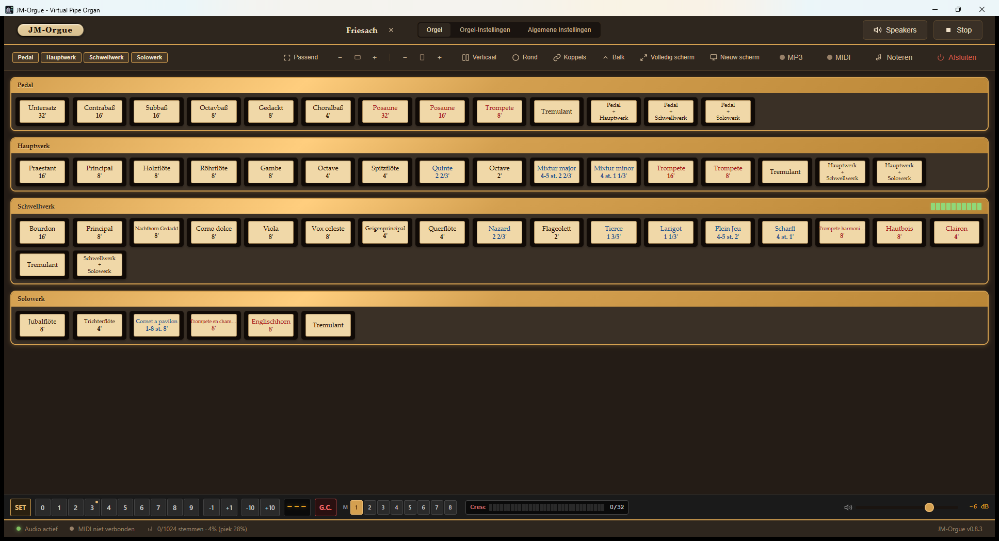
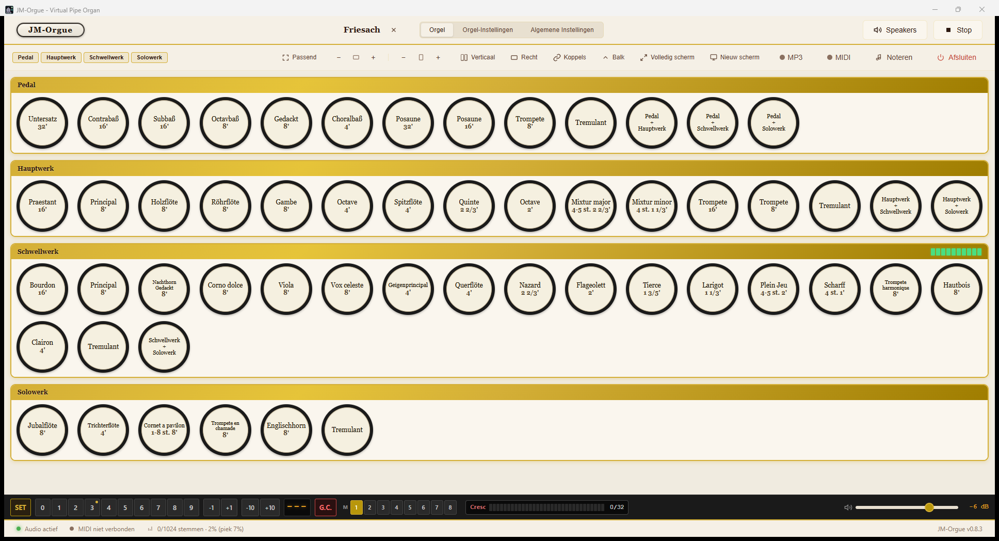
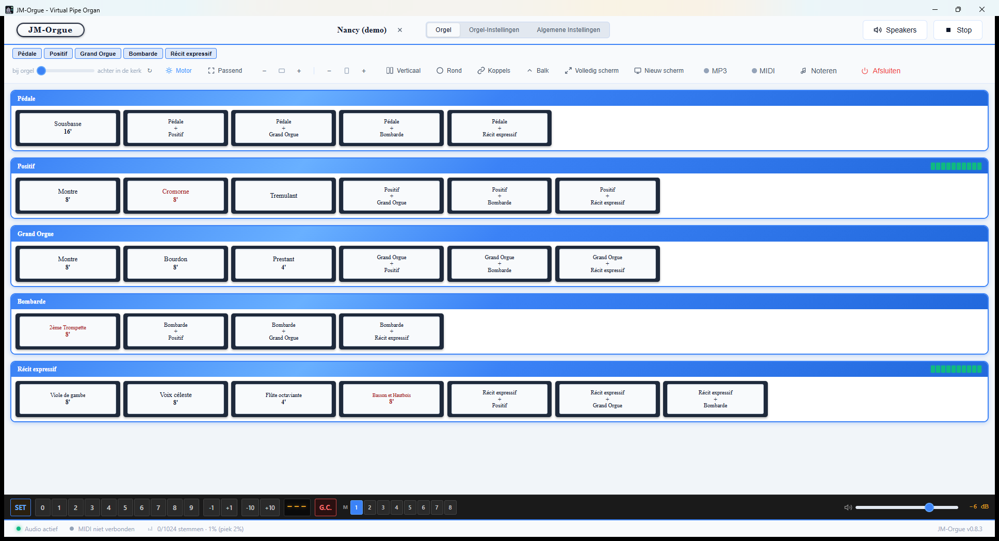

Spelen
Registers, koppels, zwelkasten, tremulant en een generaal crescendo, te bedienen met de muis, een aanraakscherm of de knoppen van uw eigen speeltafel via MIDI.
Een virtueel pijporgel voor thuis.
Sluit een orgelklavier aan, kies een sampleset en speel. JM-Orgue leest opnamen van echte orgels en geeft ze terug met registers, koppels, zwelkasten, tremulant, galm en een generaal crescendo.



Vergelijkbare mogelijkheden als de bekende commerciële pakketten, maar gratis, zonder dongle en in uw eigen taal.
| JM-Orgue | Hauptwerk Advanced | Sweelinq | |
|---|---|---|---|
| Prijs | € 0 | $599 of $29,99/mnd | abonnement |
| DRM / dongle | geen | iLok-dongle | account |
| Doorgeven aan vrienden | mag | nee | nee |
| Windows · macOS · Linux | ✓ ✓ ✓ | ✓ ✓ — | ✓ ✓ — |
| Taal van de speeltafel | 7 talen | 1 taal | 1 taal |
| Hauptwerk-samplesets | ✓ | ✓ | ✓ |
| GrandOrgue-samplesets | ✓ | — | — |
| Convolutie-galm, windmodel, perspectieven | ✓ | ✓ | ✓ |
| Afstandsbediening op telefoon of tablet | ✓ | — | — |
| Live notatie: spelen en de noten zien | ✓ | — | — |
| Hoofdtelefoon-EQ (522 modellen, AutoEq) | ✓ | — | — |
Vergelijking gebaseerd op openbare prijslijsten en release-aankondigingen. Elke sampleset heeft zijn eigen voorwaarden; die vallen niet onder de software-licentie.
De links hieronder wijzen altijd naar de nieuwste versie.


In de app zelf meldt een nieuwe versie zich vanzelf en installeert op verzoek.
Registers, koppels, zwelkasten, tremulant en een generaal crescendo, te bedienen met de muis, een aanraakscherm of de knoppen van uw eigen speeltafel via MIDI.
Galm en toonregeling per uitgang, keuze uit zo'n vijftig temperamenten, een windmodel dat de druk laat meebewegen met wat u speelt, en microfoonposities waartussen u live wisselt.
ASIO of WASAPI op Windows, CoreAudio op macOS, ALSA op Linux. Meerdere uitgangen tegelijk, met de divisies verdeeld over de kanalen.
MIDI en MP3, met een archief dat vanzelf meeschrijft. Zo kunt u uw spel teruglezen zonder er aan te hoeven denken.
Wat u speelt verschijnt als notenschrift in een eigen venster, met laag-voor-laag bewerken en export naar MIDI of PDF.
Een QR-code opent een tablet of telefoon in uw eigen wifi als tweede registreerscherm, zonder iets te installeren.
Automatische correctie voor 522 koptelefoonmodellen (AutoEq-presets), plus een eigen EQ per uitgang.
Rechtsklik of twee seconden vasthouden op elke knop koppelt hem aan uw eigen speeltafel. Werkt op registers, koppels, zweltreden en de setzerbalk.
Nederlands, Engels, Duits, Frans, Italiaans, Spaans en Pools — in de speeltafel én de handleiding.
Een volledige handleiding met schermafbeeldingen, in zeven talen:
In de app zelf opent u de handleiding via de knop Handleiding onderaan de bibliotheek, in de taal van de app.
Een eigen pijporgel samplen voor JM-Orgue? JM-Rec neemt pijp voor pijp op, loopt automatisch door klavieren en registers heen, en schrijft de opnamen weg in de map-per-register-structuur die JM-Orgue direct herkent. Draadloze bediening vanaf elke telefoon of tablet.
Windows · Microfoon of “Wat je hoort” · Gratis release-versie.
JM-Orgue leest Hauptwerk-definities (.Organ_Hauptwerk_xml) en GrandOrgue-definities (.organ) rechtstreeks, plus een eigen map-per-register-formaat voor eigen opnamen. Gesloten varianten zoals .hbw, .pkg en .iwh werken niet; die worden geweigerd met een melding, nooit stil.
Dat hangt af van de sampleset. Een eenvoudig orgel vraagt een paar gigabyte; een surround-set met meerdere opnameposities tientallen. JM-Orgue laadt niet alles ineens in (startbuffer per opname), en waarschuwt als uw keuze krap zit.
Ja, zolang u de officiële installer ongewijzigd doorgeeft, er geen geld voor vraagt en de licentie meegaat. Samplesets vallen niet onder deze licentie — daarvoor gelden de voorwaarden van wie ze gemaakt heeft.
Op Windows is ASIO sneller en stabieler, maar niet verplicht. WASAPI werkt direct uit de doos. Op macOS werkt CoreAudio, op Linux ALSA — allemaal zonder extra te installeren.
Ja. Alle knoppen zijn met de vinger bedienbaar; MIDI-leren gaat met rechtsklik of twee seconden vasthouden, zodat u geen muis nodig heeft. Een extra scherm (bijvoorbeeld een tweede monitor of een tablet) kan als los registerscherm dienen.